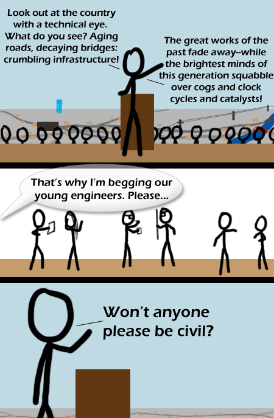

Comic JK 353
When I Feel Like It
⇤
<
?
>
⇥

⇤
<
?
>
⇥
Forum
.
RSS
.
Digg
.
Facebook
.
Reddit
.
Twitter
.
Stumbleupon
Enter your thoughts on number 353 here. Please, no spamming, trolling, or phreaking. Civil engineering joke, with references to chemistry and programming. I think this one is GREAT!!!! >Does Civil Engineering really deserve a joke? >>Of course it does. There's more than enough bad puns to go around... I consider myself to be a generally nice engineer... >>>Civil engineering = not real engineering..... >>>> If you mean by being the original and purest form of engineering.. yes, I totally agree. For me, the ads below the comic are very well targeted. "Civil Engineer University - Free education guide instantly.", "Civil Engineering Degree - Earn a Masters of Civil Engineering Online", etc etc. >This one says "Debt Problems" - they're thinking ahead (or targeting Saudi Arabia)... It is said that among engineers, Chemical Engineers make the gun powder, Mechanical Engineers make the gun, Electrical Engineers the tracking system, and Civil Engineers make the targets. >And when they get tired of that, they go work for Mining Engineers :p alt text hilarity I'm a CE prof - this is going up on my door!! AAAAAUUUUUUUGGGGGGGHHHHHHHHHH Comicjk, get out of my head! I'm enrolling for university (Bachelor of Engineering) tomorrow! >I've already done that! Hope you like maths. While i tend to agree with the alt-text, i doubt that will ever be a large scale problem. But then too many engineers changed their professions and there was a civil war. >Over building designs! "Simple" engineers? "Snivel" engineers? Ahh, school days... >Is there such a thing as simple engineering? I think not. >>3 Engis are arguing: Mech says god is mechanical engi, look at the bones, the muscles, levers and pulleys. Electrical says no, god is electrical engi, look at the nerves, the wiring of the brain. Civil says no, god is civil engi, who else would run a waste disposal pipeline though a great recreational area?. >>>I clearly need a dirtier mind, it took me a few seconds to get that >.<